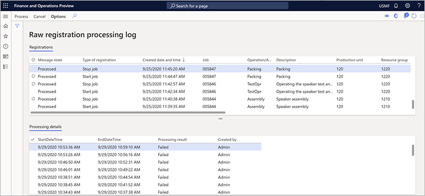

Arbeitsauslastungen bei der Fertigungsausführung für Cloud- und Edge-Scale-Einheiten
Important
Dynamics 365 for Finance and Operations hat sich zu speziell entwickelten Anwendungen entwickelt, mit denen Sie bestimmte Geschäftsfunktionen verwalten können. Weitere Informationen zu diesen Änderungen finden Sie im Dynamics 365-Lizenzierungshandbuch.
Important
Die hier aufgeführten Funktion sind alle oder teilweise im Rahmen einer Vorschauversion verfügbar. Inhalt und Funktionsweise unterliegen Änderungen. Weitere Informationen zu Vorschauversionen finden Sie in den FAQ zu Dienstupdates für One Version.
Warning
Einige Geschäftsfunktionen werden in der öffentlichen Vorschau nicht vollständig unterstützt, wenn Arbeitsauslastungen mit Scale-Units verwendet werden.
Bei der Fertigungsausführung bieten Cloud- und Edge-Scale-Einheiten die folgenden Funktionalitäten, auch wenn die Edge-Einheiten nicht mit dem Hub verbunden sind:
- Maschinenbediener und Werkstattleiter können auf den operativen Produktionsplan zugreifen.
- Maschinenbediener können den Plan auf dem neuesten Stand halten, indem sie diskrete und Prozessfertigungsaufträge ausführen.
- Der Fertigungsleiter kann den Betriebsplan anpassen.
- Die Arbeiter können auf die Zeiterfassung zugreifen, um die korrekte Berechnung der Löhne sicherzustellen.
Dieses Thema beschreibt, wie Arbeitsauslastungen für die Fertigungsausführung mit Cloud- und Edge Scale-Units funktionieren.
Der Fertigungslebenszyklus
Wie die folgende Abbildung zeigt, ist der Fertigungslebenszyklus in drei Phasen unterteilt: Planen, Ausführen und Fertigstellen.

Die Phase Planen umfasst Produktdefinition, Planung, Auftragserstellung und -terminierung sowie Freigabe. Der Freigabeschritt kennzeichnet den Übergang von der Phase Planen zur Phase Ausführen. Wenn ein Produktionsauftrag freigegeben wird, sind die Produktionsaufträge auf der Produktionsfläche sichtbar und bereit zur Ausführung.
Wenn ein Produktionsauftrag als abgeschlossen markiert wird, wechselt er von der Phase Ausführen in die Phase Finalisieren. In der Phase Finalisieren durchlaufen die Registrierungen aus der Phase Ausführen einen Workflow zur Genehmigung, wo sie berechnet, genehmigt und übertragen werden. An diesem Punkt ist der Produktionsauftrag abgeschlossen. Damit ist die Grundlage für die Entlohnung der Arbeitskräfte geschaffen.
Aufteilung der Phase „Ausführen“ in eine separate Arbeitsauslastung
Wie die folgende Abbildung zeigt, wird bei Verwendung von Scale-Units die Phase Ausführen als separate Arbeitsauslastung aufgeteilt.
{kind=link}
Das Modell geht nun von einer Einzelinstanz-Installation zu einem Modell über, das auf dem Hub und Scale-Units basiert. Die Phasen Planen und Finalisieren laufen als Back-Office-Operationen auf dem Hub, und die Arbeitsauslastung der Fertigungsausführung läuft auf den Scale-Units. Die Daten werden asynchron zwischen dem Hub und den Scale-Units übertragen.
Wenn ein Produktionsauftrag auf dem Hub freigegeben wird, werden alle Daten, die zur Verarbeitung von Produktionsaufträgen erforderlich sind, an die Scale-Unit übertragen. Zu diesen Daten gehören Produktionsaufträge, Arbeitspläne, Stücklisten und Produkte. Daten, die sich nicht auf einen Produktionsauftrag beziehen (z. B. indirekte Aktivitäten, Abwesenheitscodes und Produktionsparameter), werden ebenfalls vom Hub an die Scale-Unit übertragen. In der Regel können Daten, die aus dem Hub stammen und an die Scale-Unit übertragen werden, nur im Hub erstellt oder aktualisiert werden. Zum Beispiel kann ein neuer Abwesenheitscode oder eine indirekte Aktivität nicht auf der Scale-Unit erstellt werden —, sie können nur für die Registrierung verwendet werden. Die Registrierungen, die während der Ausführung auf der Scale-Unit vorgenommen werden, werden dann an den Hub übertragen, wo die Zeit- und Anwesenheitsgenehmigung, der Bestand und die finanziellen Aktualisierungen verarbeitet werden.
Manufacturing Execution Tasks, die auf Arbeitsauslastungen ausgeführt werden können
Die folgenden Manufacturing Execution Tasks können derzeit auf Arbeitsauslastungen ausgeführt werden, wenn Scale-Units verwendet werden:
- Einbuchung, Anmeldung, Ausbuchung und Abwesenheit
- Einzelvorgang starten
- Aufträge bündeln
- Fortschritt melden
- Ausschuss melden
- Indirekte Aktivität
- Pause
Arbeiten mit Arbeitsauslastungen zur Fertigungsausführung auf dem Hub
Normalerweise laufen die Prozesse, die für die Ausführung von Arbeitsauslastungen in der Fertigungsausführung erforderlich sind, automatisch, um den Hub und alle Scale-Units bei Bedarf synchron zu halten. Wenn Sie jedoch Probleme haben, können Sie die Verarbeitung von Rohregistrierungen, die von Arbeitsauslastungen empfangen werden, manuell auslösen und/oder das Protokoll der Registrierungsverarbeitung überprüfen.
Manuelles Verarbeiten von Rohregistrierungen
Ein Batch-Job im Supply Chain Management läuft automatisch, um alle Registrierungen zu verarbeiten, die von den Arbeitsauslastungen empfangen wurden. Dieser Job erstellt die erforderlichen Produktionserfassungen und Logbucheinträge, wenn eine Registrierung für einen abgeschlossenen Auftrag in der Arbeitsauslastung verarbeitet wird.
Obwohl der Job normalerweise automatisch läuft, können Sie ihn jederzeit manuell ausführen, indem Sie sich am Hub anmelden und zu Produktionssteuerung > Periodische Aufgaben > Backoffice-Arbeitsauslastung > Rohregistrierungen verarbeiten gehen.
Prüfen Sie das Verarbeitungsprotokoll für Rohregistrierungen
Um das Protokoll der Registrierungsverarbeitung zu überprüfen, melden Sie sich beim Hub an und gehen Sie zu Produktionssteuerung > Periodische Aufgaben > Backoffice Arbeitsauslastung > Rohregistrierungsverarbeitungsprotokoll. Die Seite Rohregistrierungs-Verarbeitungsprotokoll zeigt eine Liste der verarbeiteten Rohregistrierungen und den Status der einzelnen Registrierungen.

Sie können jede Registrierung in der Liste bearbeiten, indem Sie sie auswählen und dann eine der folgenden Schaltflächen im Aktivitätsbereich wählen:
- Bearbeiten - Manuelles Bearbeiten der ausgewählten Registrierung. Diese Aktion kann nützlich sein, wenn der Job Rohregistrierungen verarbeiten nicht gelaufen ist oder fehlgeschlagen ist.
- Abbrechen - Bricht die ausgewählte Registrierung ab.
Arbeiten mit Arbeitsauslastungen der Fertigungsausführung auf einer Scale-Unit
Normalerweise laufen die Prozesse, die für die Ausführung von Arbeitsauslastungen in der Fertigungsausführung erforderlich sind, automatisch, um den Hub und alle Scale-Units bei Bedarf synchron zu halten. Wenn Sie jedoch Probleme haben, können Sie den Verlauf der Aufträge prüfen, die auf einer Scale-Unit verarbeitet wurden, oder den Auftrag Manufacturing Hub to Scale-Unit message processor manuell ausführen.
Prüfen der Historie von Fertigungsaufträgen, die auf einer Scale-Unit verarbeitet wurden
Um die Historie der Fertigungsaufträge einzusehen, die auf einer Scale-Unit verarbeitet wurden, melden Sie sich an der Scale-Unit-Maschine an und gehen Sie zu Produktionssteuerung > Periodische Aufgaben > Backoffice-Arbeitsauslastung > Historie der Verarbeitung von Fertigungsaufträgen. Die Seite Verarbeitungshistorie von Fertigungsaufträgen zeigt die Verarbeitungshistorie der Produktionsaufträge auf der Scale-Unit. Sie können jeden Produktionsauftrag in der Liste bearbeiten, indem Sie ihn auswählen und dann eine der folgenden Schaltflächen im Aktivitätsbereich wählen:
- Bearbeiten - Den ausgewählten Produktionsauftrag manuell bearbeiten.
- Abbrechen - Den ausgewählten Produktionsauftrag abbrechen.
Fertigungs-Hub zu Scale-Unit Nachrichtenprozessorauftrag
Der Job Manufacturing hub to scale unit message processor verarbeitet Daten vom Hub zur Scale-Unit. Dieser Job wird automatisch gestartet, wenn die Arbeitsauslastung der Fertigungsausführung bereitgestellt wird. Sie können ihn jedoch jederzeit manuell ausführen, indem Sie zu Produktionssteuerung > Periodische Aufgaben > Backoffice-Arbeitsauslastung > Manufacturing Hub to Scale-Unit Message Processor gehen.